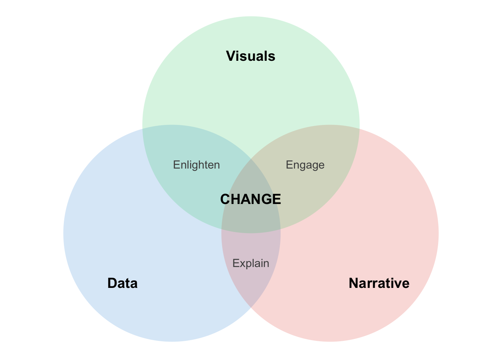
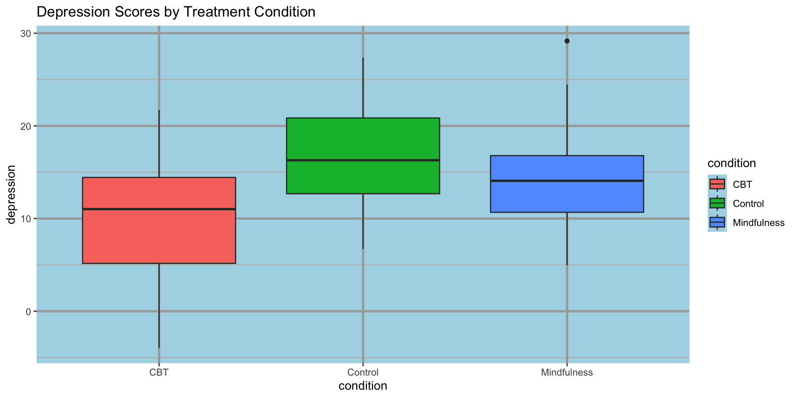
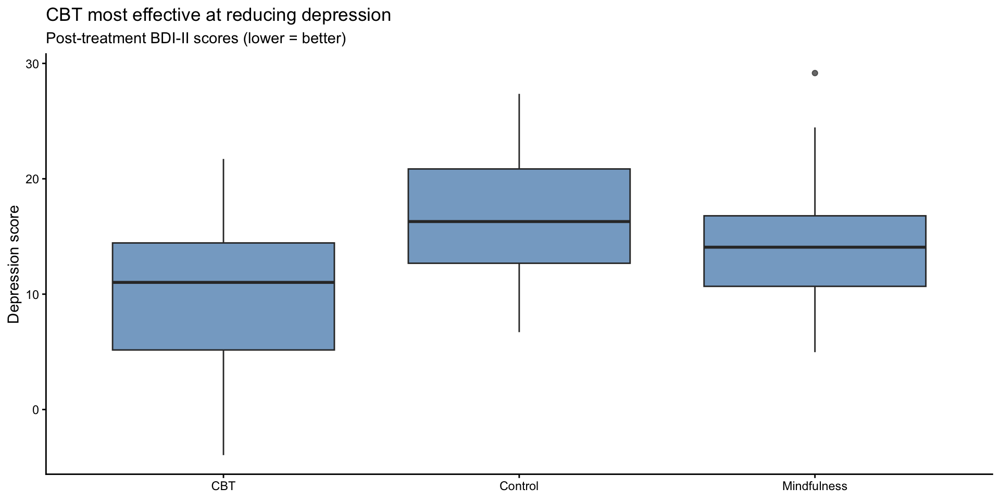
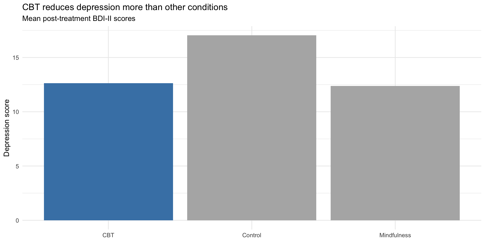
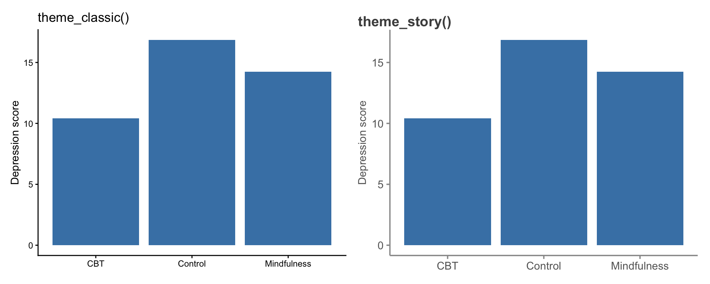
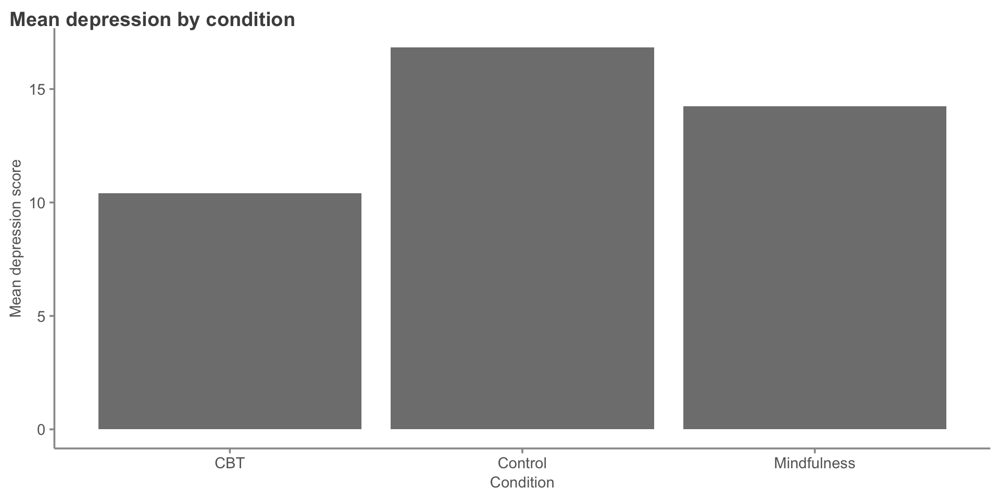
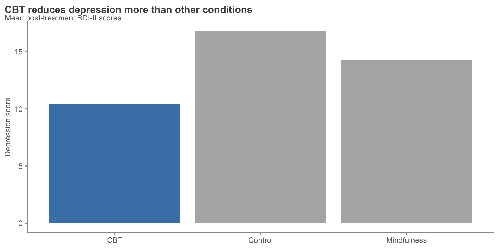
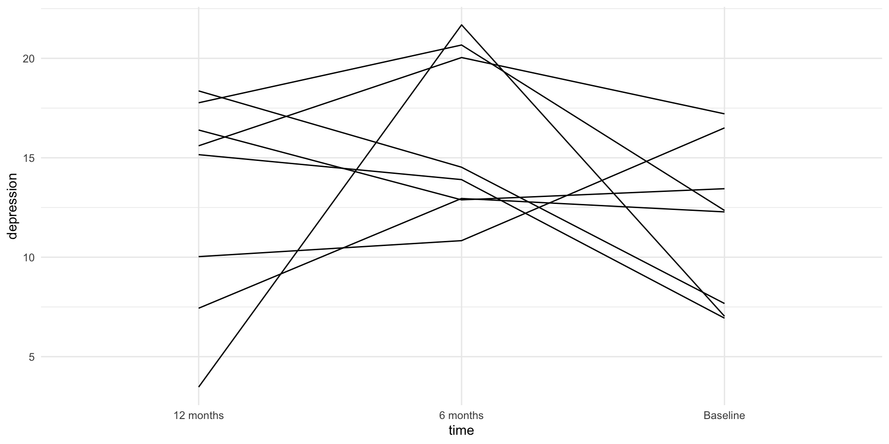
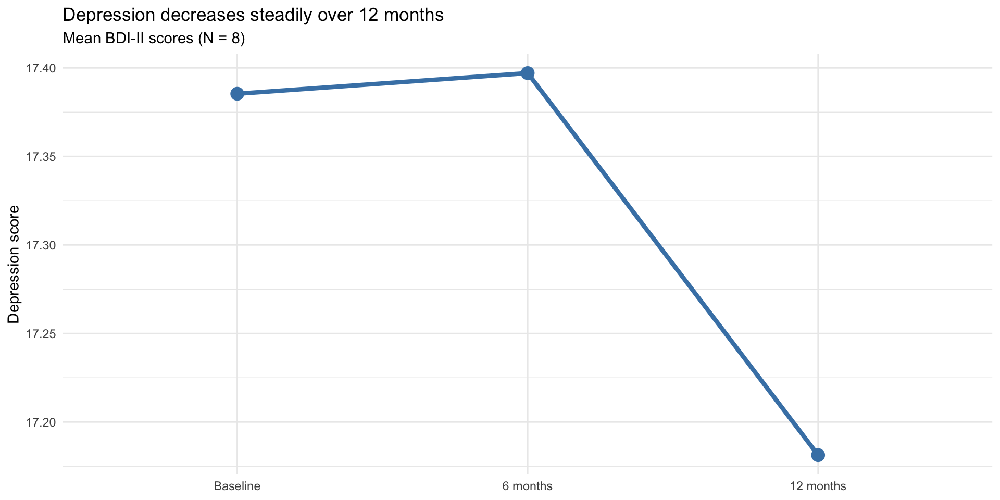

therapy_data <- tibble(
condition = rep(c("Control", "CBT", "Mindfulness"), each = 30),
depression = c(rnorm(30, 18, 5), rnorm(30, 12, 5), rnorm(30, 14, 5))
)
ggplot(therapy_data, aes(x = condition, y = depression, fill = condition)) +
geom_boxplot() +
labs(title = "Depression Scores by Treatment Condition") +
theme_gray() +
theme(
panel.background = element_rect(fill = "lightblue"),
panel.grid.major = element_line(color = "darkgray", size = 1),
panel.grid.minor = element_line(color = "gray", size = 0.5)
)Storytelling with Data
PSY 410: Data Science for Psychology
Dr. Sara Weston
2026-05-20
Why storytelling?
Data alone isn’t enough
You’ve learned to:
- Import and clean data
- Transform and summarize
- Create visualizations
- Handle missing data
But technical skills ≠ communication skills
The data storytelling triad

- Data + Narrative = Explain
- Data + Visuals = Enlighten
- Narrative + Visuals = Engage
- All three = Change
Why stories work
Stories are memorable:
- 63% of people remember stories
- Only 5% remember statistics
Stories are persuasive:
- Charity brochure study: Story about one child raised 2x more donations than statistics about millions
Decisions are emotional:
- We think we’re rational
- But emotions drive decision-making
- Stories engage emotions
Your goal as a data scientist
Don’t just show data — tell a story that:
- Answers a specific question
- Provides context
- Highlights what matters
- Leads to action or understanding
The storytelling framework
Step 1: Understand the context
Before making any visualization, ask:
- Who is the audience?
- Researchers? General public? Clinicians? Grant reviewers?
- What do they care about?
- Effect sizes? Practical implications? Cost savings?
- What action do you want them to take?
- Fund your research? Change clinical practice? Read your paper?
Example: Different audiences, different stories
Finding: CBT reduces depression by 8 points on the BDI-II (d = 0.65)
For researchers:
- Effect size, confidence intervals, p-values
- Comparison to other interventions
- Limitations and future directions
For clinicians:
- Practical significance: “Patients move from moderate to mild depression”
- How to implement, training required
- Success rates, dropout rates
Step 2: Choose appropriate visuals
Match your plot type to your message:
| Goal | Good choice | Bad choice |
|---|---|---|
| Show change over time | Line plot | Pie chart |
| Compare groups | Bar chart, boxplot | 3D pie chart |
| Show distribution | Histogram, density | Table |
| Show relationship | Scatterplot | Multiple pie charts |
| Show parts of whole | Stacked bar, treemap | 3D bar chart |
Step 3: Eliminate clutter
Clutter is anything that doesn’t help your audience understand the message.
Common clutter:
- Unnecessary gridlines
- Heavy borders and backgrounds
- Too many colors
- Redundant labels
- Chart junk (3D effects, shadows, unnecessary decorations)
Example: Cluttered figure
Example: Cluttered figure

Example: Decluttered figure
ggplot(therapy_data, aes(x = condition, y = depression)) +
geom_boxplot(fill = "steelblue", alpha = 0.7) +
labs(
title = "CBT most effective at reducing depression",
subtitle = "Post-treatment BDI-II scores (lower = better)",
x = NULL,
y = "Depression score"
) +
theme_minimal() +
theme(
panel.grid.minor = element_blank(),
panel.grid.major.x = element_blank()
)Example: Decluttered figure

Gestalt principles of design
Your brain groups things automatically based on:
- Proximity — things close together are related
- Similarity — things that look similar are related
- Enclosure — things inside a boundary are related
- Connection — things connected by lines are related
Use these principles intentionally!
Step 4: Focus attention
Preattentive attributes are processed by the brain in < 500ms:
- Position (most powerful)
- Size
- Color (especially contrast)
- Shape
Use these to direct attention to what matters
Example: Without focus
therapy_summary <- therapy_data |>
group_by(condition) |>
summarize(mean_depression = mean(depression))
ggplot(therapy_summary, aes(x = condition, y = mean_depression)) +
geom_col(fill = "gray50") +
labs(
title = "Mean depression by condition",
x = "Condition",
y = "Mean depression score"
) +
theme_minimal()Example: Without focus

Example: With focus
therapy_summary <- therapy_summary |>
mutate(highlight = if_else(condition == "CBT", "Highlight", "Normal"))
ggplot(therapy_summary, aes(x = condition, y = mean_depression, fill = highlight)) +
geom_col() +
scale_fill_manual(values = c("Highlight" = "steelblue", "Normal" = "gray70")) +
labs(
title = "CBT reduces depression more than other conditions",
subtitle = "Mean post-treatment BDI-II scores",
x = NULL,
y = "Depression score"
) +
theme_minimal() +
theme(legend.position = "none")Example: With focus

Step 5: Think like a designer
Visual hierarchy guides the eye:
- Title — what should they remember?
- Main visual — the data
- Supporting elements — axes, labels, legend
- Context — subtitle, caption, notes
Size matters:
- Important = bigger
- Secondary = smaller
Effective titles
Bad title: “Depression scores by condition”
Better title: “CBT most effective at reducing depression”
Even better (with context):
- Title: “CBT reduces depression by 8 points”
- Subtitle: “Compared to control (2 points) and mindfulness (4 points)”
Color best practices
- Use color purposefully — to highlight, not decorate
- Be colorblind-friendly — use
viridisorColorBrewer - Limit your palette — 3-5 colors maximum
- Consider meaning — red = danger/bad, green = good, blue = neutral
Color example: Before
Color example: Before

Color example: After
Color example: After

Critical evaluation of figures
Misleading figures
Visualizations can deceive (intentionally or not):
- Truncated y-axes — exaggerate small differences
- Dual axes with different scales — imply false relationships
- Cherry-picked time ranges — hide broader trends
- 3D charts — distort perception of size
- Area/bubble charts — hard to compare sizes accurately
Example: Truncated y-axis
treatment_effect <- tibble(
condition = c("Control", "Treatment"),
score = c(18, 16)
)
ggplot(treatment_effect, aes(x = condition, y = score)) +
geom_col(fill = "steelblue") +
coord_cartesian(ylim = c(15, 19)) + # Truncated!
labs(
title = "MISLEADING: Treatment looks very effective",
subtitle = "Y-axis starts at 15, not 0",
x = NULL,
y = "Depression score"
) +
theme_minimal()Example: Truncated y-axis

Fixed: Full y-axis
Fixed: Full y-axis

When truncated axes are okay
Truncation is fine when:
- The baseline is non-zero (e.g., human body temperature)
- You’re showing change over time (line plot)
- You explicitly note it in the caption
Never truncate:
- Bar charts (bars must start at zero)
- When comparing magnitudes
Boring or ineffective figures
A figure can be honest but still useless:
- No title or labels — requires reading caption to understand
- Wrong plot type — pie chart with 12 categories
- Too many variables — can’t see patterns
- No visual hierarchy — everything looks equally important
- Default settings — looks like you didn’t try
Example: Ineffective figure
Example: Ineffective figure

Fixed: Clear message
longitudinal |>
group_by(time) |>
summarize(mean_depression = mean(depression)) |>
mutate(time = factor(time, levels = c("Baseline", "6 months", "12 months"))) |>
ggplot(aes(x = time, y = mean_depression, group = 1)) +
geom_line(color = "steelblue", size = 1.5) +
geom_point(color = "steelblue", size = 4) +
labs(
title = "Depression decreases steadily over 12 months",
subtitle = "Mean BDI-II scores (N = 8)",
x = NULL,
y = "Depression score"
) +
theme_minimal()Fixed: Clear message

The “so what?” test
Every figure should answer a question:
- ❌ “Depression scores by condition”
- ✅ “CBT reduces depression more than control”
- ❌ “Correlation between age and reaction time”
- ✅ “Older adults respond 50ms slower per decade”
Ask yourself: If someone only sees this figure for 5 seconds, what should they remember?
Pair coding break
Your turn: Improve a figure
Here’s a messy figure:
stress_data <- tibble(
profession = c("Teacher", "Nurse", "Engineer", "Retail", "Admin"),
stress = c(7.2, 8.1, 5.5, 6.8, 6.2),
burnout = c(6.8, 7.9, 4.8, 6.5, 5.9)
)
ggplot(stress_data, aes(x = profession, y = stress, fill = profession)) +
geom_col() +
labs(title = "Stress by Profession") +
theme_gray()- Remove the unnecessary legend
- Reorder professions by stress level
- Highlight the profession with highest stress
- Add a clear, message-driven title
- Clean up the theme
Time: 10 minutes
Applying to your final project
Your final project narrative
Your final project should tell a story with three acts:
- Setup (Introduction)
- What’s the question?
- Why does it matter?
- What’s your hypothesis?
- Conflict (Results)
- What did you find?
- Show with visualizations
- Highlight surprising or important patterns
- Resolution (Discussion)
- What does it mean?
- How does it answer your question?
- What should we do with this information?
Building a narrative arc
Weak narrative:
“I looked at depression and anxiety. Here’s a histogram. Here’s a scatterplot. Here’s a boxplot. The correlation was 0.65.”
Strong narrative:
“Depression and anxiety often co-occur, but we don’t know how strongly they’re related in college students. I analyzed 200 student surveys and found a strong correlation (r = .65). This suggests these conditions may share underlying mechanisms and should be treated together.”
One thing to remember
At the end of your presentation, your audience should remember one key takeaway.
What’s yours?
- “Social media use predicts anxiety in teens”
- “Mindfulness training reduces stress in nurses”
- “Memory declines linearly after age 50”
- “Treatment dropout is higher in low-income participants”
Every figure, every sentence should support that one key message.
Practical tips for final projects
- Start with your key finding — then work backward
- One main point per figure — don’t try to show everything at once
- Order matters — build up to your main finding
- Edit ruthlessly — remove anything that doesn’t support your story
- Get feedback — show your figures to someone outside the class
APA figure formatting
A note on APA formatting
You’ll receive a handout on APA figure formatting guidelines.
Key points:
- Journals have different requirements
- APA is a starting point, not gospel
- Many journals want editable figures (not embedded in Word)
- Online journals have more flexibility than print
Note
Focus on clarity and communication first, then adjust formatting as needed for specific journals.
Basic APA figure elements
- Figure number — “Figure 1”
- Title — brief and descriptive
- Image — the actual plot
- Note — additional context, definitions, copyright
Not included in the figure itself:
- Legend goes in figure note (if needed)
- No borders around the figure
- Black and white or grayscale (for print journals)
End-of-deck exercise
Critique these figures
For each figure, identify:
- What story is it trying to tell?
- What works well?
- What could be improved?
- How would you redesign it?
Look at 2-3 example figures from published psychology papers (I’ll show them in class).
Then, apply these principles to your own final project draft.
Wrapping up
The storytelling checklist
Before finalizing any figure, ask:
Key takeaways
- Data + Visuals + Narrative = Change
- Know your audience — tailor your message to who you’re speaking to
- Eliminate clutter — less is more
- Focus attention — use preattentive attributes strategically
- Be honest — don’t mislead with truncated axes or cherry-picked data
- Pass the “so what?” test — every figure should answer a question
- One key message — what do you want them to remember?
Resources for continued learning
- Knaflic (2015). Storytelling with Data (on reserve)
- Dykes (2016). “Data Storytelling: The Essential Data Science Skill”
- APA Style: Figure formatting guidelines (handout provided)
- ColorBrewer: colorbrewer2.org for colorblind-safe palettes
Before next class
📖 Read:
- R4DS Ch 28: Quarto
✅ Do:
- Submit Assignment 7 (due today)
- Submit Final Project Draft (due today)
- Revise your figures based on today’s principles
- Review feedback on your draft
Questions?
See you next week for Quarto and reproducible reports!
PSY 410 | Session 15